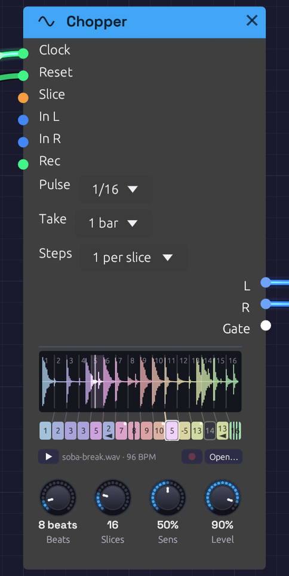

Chopper
Module ID source.chopper · Category Source

Two bars of a break in sixteen slices, each in a hue of its own, and the row of steps under them, each tinted like the slice it plays. Step 6 plays slice 2 backwards, step 12 plays its slice a fourth down, step 14 rests and step 16 stutters ×4. The dots in the corners are dice. The tick under the row is where the loop is in time; the white playhead is where it's reading.Chopper plays a drum break in time with the Clock, and lets you rearrange it step by step.
A Sampler sliced into a break plays a slice for each note: the right tool for playing a break from a keyboard. A break played in a groove asks for more. It has to stay in time, follow the patch's tempo without changing pitch, and be re-sequenced: a snare moved, a kick doubled, a fill stuttered, a hit played backwards. Doing that with a Sampler and a Step Sequencer means a note for every slice of every step, set by hand, and retuning the break whenever the tempo moves. The Chopper does it all in one module.
How it keeps time
The break is cut into slices: equal ones, or one at each hit. Each slice starts on the beat it started on in the break, and plays at its own speed. A file that plays a REX loop works this way, and so did the samplers the breaks of jungle and hip-hop were chopped on.
- Faster than the break was played, each slice starts sooner and cuts the one before it short.
- Slower, each slice ends before the next begins, and a short fade closes the gap.
- At its own tempo, every slice runs on into the next, which fades in over the same 3 ms. The two read the same sound at that moment, so the crossfade is invisible and the break plays back exactly as recorded, round and round.
Either way the pitch never moves, and nor does the groove: a hit pushed late in the break is still late, by the same share of a beat, at any tempo.
Patch the Clock's Gate into Clock, and set Pulse to the Clock's own Div: 1/16 for sixteenths. Then set Beats to how long the break is: 4 for one bar of 4/4, 8 for two. The name under the waveform shows the tempo the break plays at unchanged, as long as Beats says. Patch the Clock's Reset into Reset too, so the loop starts from its top whenever the Clock does.
The steps
Under the waveform is a row of steps, one for each slice. Each step's turn comes where its slice began in the break, and left alone it plays its slice. Unedited, the row runs through the slices' hues in order, a spectrum from end to end, and the break plays as recorded.
Each step can be told to play it differently:
- Another slice. Drag the step up or down, or right-click it and choose one. The step takes on that slice's hue, so a rearranged pattern can be read at a glance: which slices come back, which never play.
- Backwards (Alt+click). It plays its slice from the end, and carries an arrow pointing back.
- Repeat ×2, ×3 or ×4 (Shift+click). It plays its slice from the top that many times, evenly across its turn: a stutter, or a roll at the end of a phrase. The step splits into its hits.
- Pitch, from 12 semitones down to 12 up (right-click). Tape-style: higher plays faster and leaves a gap before the next step, lower plays slower and is cut short by it. The step shows the semitones.
- Rest (click). Nothing plays, and the Gate stays low. The step is an empty outline.
- Chance (Ctrl+click steps through 0, 25, 50 and 100%). How often the step swaps its slice for one at random, so the break varies itself. A dot in the step's corner grows with the chance. A pattern plays its dice the same way each time the transport starts from the top.
A rest remembers what it was, so clicking it again plays it as before. Right-click a step for all of these, Back to slice n, as it was, Shuffle the slices (every step a slice at random, each slice once) and Reset every step. Every edit is a step you can undo.
A pattern longer than the break
A chopped break often runs under a longer pattern: two bars of break, four bars of pattern, the second half a variation on the first. Steps sets how long the row is: 1 per slice (the row as above), or 2, 3 or 4 per slice. Past the first pass the row wraps over the break again, and each extra step starts out playing its slice in the next pass, so left alone it still plays the break as recorded, round and round.
The face shows a line of steps for each pass, each line under the same slices, so a step reads straight down to the same slice's turn in the other passes. Edit any of them on its own. A step past the first pass has two more things on its right-click menu: Same as pass n copies the pass above into its own, to vary from there, and Shuffle the slices in pass n shuffles only its own line. Reset every step resets the whole row.
The row has at most 64 steps, so more slices allow fewer passes: up to 16 slices take all four, up to 21 three, up to 32 two, and more than that one.
Loading a break
Load a file as on the Sampler: click Open…, or the empty panel, or drag a WAV, MP3, FLAC or Ogg file onto the node. While a dragged file is over the node you hear it, so you can audition files before you drop one. It plays once when it loads, so you hear what you chose, and ▶ plays it again at any time, dry, beside the patch. Alt-click a slice to hear just that slice.
The file should be the loop itself, start to end: a break cut on its downbeats, as you'd cut one to loop it in a sampler. The Cut-Up example's break is made by Soba's own Drums (tools/breaks/make_break.py), so it's free to use however you like.
Recording a break
The Chopper can record its own break. Patch something into In L (and In R, for stereo) and press the red Rec button beside Open…. It's the Sampler's recorder: the same button, the same take drawn in red as it comes in, and the same file beside the patch when it's done. Play a phrase into the patch, from a Note In, an Audio Input or the patch's own drums, and chop it up straight away.
Take starts at 1 bar. With a Clock running, Rec then waits for the next bar line, which the panel says, and records exactly that many bars, so the take is already a loop. As it comes in, the panel ticks its beats, each bar more strongly, and counts bar and beat of the bars, REC 2.3 / 4, so you can see how much of the phrase is left to play. When it ends, it's the break: it plays at once, from its top on the bar it ended, and Beats is set to its length, 8 for two bars of 4/4, so it loops in time. Undo brings back the break you had, with its Beats.
Free records until Rec is pressed again. A free take made while a Clock runs is set to as many beats as it nearly is; without a Clock, Beats is left as it was.
Patch a gate into the Rec jack and it takes over from the button: a take starts as it rises (or on the next bar) and ends as it falls. Right-click Rec to learn a MIDI footswitch for it.
Slicing at the hits
Slices cuts the loop into 2 to 64 equal slices. Eighth notes suit a swung break, since swing moves the sixteenths in between, not the eighths. Turn it past 64 to Onsets and the loop is cut at its hits instead, exactly as on the Sampler: Sens chooses how many hits count, and the markers drag, come off the panel and are added by double-click. Let go of a marker with Alt held to hear the slice it now begins.
Cut at the hits, the steps stay evenly spaced under the waveform but the slices don't, so the fan of rules between them leans. Each hit then starts on its own place in the beat, swing and all, and the step row still gives every hit a step.
Inputs
| Port | Signal Type | Description |
|---|---|---|
| Clock | Gate (Green) | Each rising edge is a pulse, worth what Pulse says. The loop plays from the first pulse after a reset. With nothing patched, nothing plays |
| Reset | Gate (Green) | A rising edge starts over: the next pulse plays the loop from its top |
| Slice | Control (Orange) | Picks the slice each step plays as its turn comes, in place of its own: 0 to 1 across the slices. An Arranger lane or a Sample & Hold here rearranges the break from outside. Repeats, pitch and rests still come from the step |
| In L, In R | Audio (Blue) | What Rec records (see Recording a break). One side patched records on both |
| Rec | Gate (Green) | Records while high. Patched, it takes over from the button |
Outputs
| Port | Signal Type | Description |
|---|---|---|
| L | Audio (Blue) | The left channel. A mono file plays the same on both outputs |
| R | Audio (Blue) | The right channel |
| Gate | Gate (Green) | High for half of each slice played, repeats included, and low through a rest. An envelope, a Drum or a sequencer's Clock here follows the chop |
Parameters
| Control | Range | Default | Description |
|---|---|---|---|
| Pulse | 1, 1/2, 1/4, 1/8, 1/16 | 1/16 | What each pulse at Clock is worth. Set it to the Clock's Div |
| Beats | 1 – 64 | 4 | How long the loop is, in beats |
| Slices | 2 – 64, Onsets | 16 | Equal slices, or one at each hit. Each slice gets a step |
| Sens (Sensitivity) | 0 – 100% | 50% | Sliced by Onsets, how strong a hit must be to get a marker |
| Level | 0 – 100% | 80% | Output level |
| Steps | 1 – 4 per slice | 1 per slice | How long the row is: a pass over the break for each (see A pattern longer than the break) |
| Take | Free, 1 – 16 bars | 1 bar | In bars, with a Clock running, a take starts on the next bar and lasts that long, and sets Beats to match |
Tips
- Find the break's tempo. A loop of 2.000 seconds at Beats 4 is 120 BPM, and the name under the waveform says so. If the number looks odd (91.3 BPM), Beats is likely wrong, or the file isn't cut on its downbeats.
- Slow it right down and the gaps between slices become part of the sound: a break at half speed is a sparse, clipped pattern of hits, each followed by silence.
- One break, two Choppers. Patch the same file into a second Chopper with another pattern and pan the two apart, or let one take over from the other by riding the Mixer.
- Resample a groove. Patch the mix of a few drums into In, record four bars, then rearrange what you just played: the drums can keep going beside it, or be muted for the chopped version to take over.
- Follow the chop. The Gate output rises on every slice, so a bass line clocked by it moves with the drums, and an envelope from it pumps a pad in time with each hit.